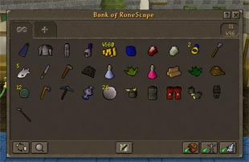
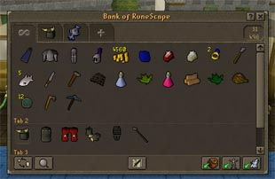

Controls - Banks
Introduction
As your wealth in RuneScape increases, you will soon run out of space in your inventory to carry it all around with you. It is quite risky to have all of your items on you because, when you die, you will drop the majority of them.
To prevent such a devastating loss, your character has been provided with a bank account. You can place any item in your bank account and retrieve it at any time from any bank.
The Bank of RuneScape has branches all over the world. Branches of this bank can be found in Varrock, Falador, Edgeville, Draynor Village, and many other populated areas.

Right-clicking on the booth will display the following options - Use Bank booth, Use-quickly Bank booth, Collect Bank booth and Examine Bank booth. These options are always displayed for a player using a single button mouse.
By selecting Use Bank booth, you will start a conversation with a banker. To bypass the conversation screens and access your account immediately, select the Use-quickly Bank booth option.

Once you have decided to use the bank, your bank account will be displayed. Here you will see all of the items that you have gathered and saved.
Storage space in bank accounts are different for members and non-members. Members have hundreds of spaces in their bank, while non-members have 68.

Some items will not stack in your bank, as the bankers find them too confusing. These items are usually used to hold other items, like the satchels from Tower of Life. Other items are simply unbankable, but these are rare on RuneScape.
To deposit or withdraw an item, simply click on it. Players with multiple button mice will withdraw or deposit a single piece of that item. Players using a single button mouse will get a menu of options.
To deposit more than one of an item at a time, players using a multiple button mouse should right-click on the item to deposit or withdraw, and select the number you wish to deposit or withdraw from the list. Alternatively, you can use the three icons in the bottom-right to deposit everything from your inventory, your equipped inventory or your Summoning familiar's inventory. The banks are free to use, so making use of them to safely store your extra items is a very good idea!
 If your account is filling up with items, you'll find it useful to know that there is a function that allows you to search your bank account for specific items. Simply click the 'Search' button and type the name, or part of the name, of the item you are looking for; this will filter out all of the other items visible in your bank interface, so you can easily locate an item buried deep in your overflowing bank account. You can turn off the search feature at any time by clicking the 'Search' button again or clicking outside of the Search window.
If your account is filling up with items, you'll find it useful to know that there is a function that allows you to search your bank account for specific items. Simply click the 'Search' button and type the name, or part of the name, of the item you are looking for; this will filter out all of the other items visible in your bank interface, so you can easily locate an item buried deep in your overflowing bank account. You can turn off the search feature at any time by clicking the 'Search' button again or clicking outside of the Search window.
Bank Tabs

To set up a tab, simply drag an item onto the tab marked with a '+'. This will create a new tab that will only show a set of items that you specify and will be marked with the item you first drag onto it. Dragging more items onto the tab will place them into that section of your bank account. Each of these sections will be marked in your main account window, or you can click on the tab to view only those items.
For instance, if you want to keep your melee combat gear in an easy-to-find location, you might like to keep all of it in a specific tab. You will still be able to find it in your main account (by clicking the 'All' tab), but you can choose specific items to be displayed to make accessing them much quicker.
You may also drag items from a Search into a tab or to create a new one. Up to 8 tabs can be created at any one time. For an at-a-glance view of how many spaces remain in your bank, look at the counter in the top-right of your bank screen.
To remove a bank tab, right-click on it and select 'Collapse tab'. A tab will also be removed if you clear it of items.
Rearranging Items
 There are two ways for you to rearrange your bank account: Swap and Insert. You can select which by clicking the 'Swap/Insert' button, at the bottom of the bank interface. If you have selected the 'Swap' option, you can drag and drop items in your bank on top of other items, and the two items will swap positions in your bank.
There are two ways for you to rearrange your bank account: Swap and Insert. You can select which by clicking the 'Swap/Insert' button, at the bottom of the bank interface. If you have selected the 'Swap' option, you can drag and drop items in your bank on top of other items, and the two items will swap positions in your bank.
If you have selected the 'Insert' option, dragging an item on top of an existing item will move other items around to accommodate it.
Using Notes
 Any items which don't normally stack in your inventory and that are tradable (such as ore and food) can be withdrawn in the form of a note. If an item cannot be traded, you will not be able to withdraw it as a note. This allows large trades without taking up lots of inventory slots. To choose to withdraw the items as a note, you can toggle the 'Note/Item' button at the bottom of the interface.
Any items which don't normally stack in your inventory and that are tradable (such as ore and food) can be withdrawn in the form of a note. If an item cannot be traded, you will not be able to withdraw it as a note. This allows large trades without taking up lots of inventory slots. To choose to withdraw the items as a note, you can toggle the 'Note/Item' button at the bottom of the interface.
Items stored in note form cannot be wielded or equipped, and cannot be used in most skills. They can be sold as notes to any shop that would buy the un-noted item, and they can also have the low and high alchemy spells cast upon them.
Beasts of Burden
 If you have a beast of burden familiar (from the Summoning skill), you can move its entire inventory into your bank account by clicking the 'wolf head' icon at the bottom-right of the bank interface.
If you have a beast of burden familiar (from the Summoning skill), you can move its entire inventory into your bank account by clicking the 'wolf head' icon at the bottom-right of the bank interface.
Bank PINs

You will have to create one for yourself, preferably the first time you access your bank account.
To get to this screen, simply talk to the banker and select 'Check your PIN setting'. This bank PIN setting will provide you with information on the status of your pin.
You can click on 'Set a PIN' to set your PIN for the first time or change it later.
If you want to change how long a PIN recovery takes, click on 'Change your recovery delay'.

|
More articles in Controls
|
|
|
Further Help
If this article does not help you, you may find the following sections of the RuneScape site helpful:
|
|